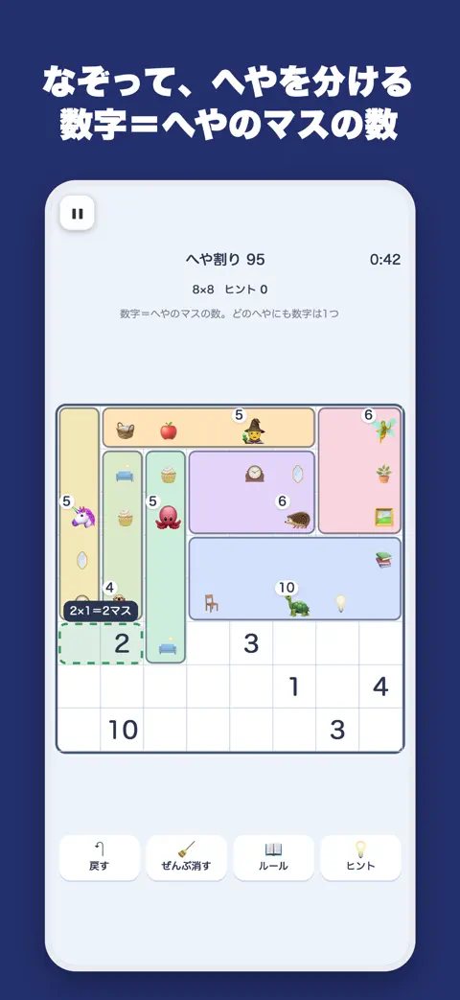
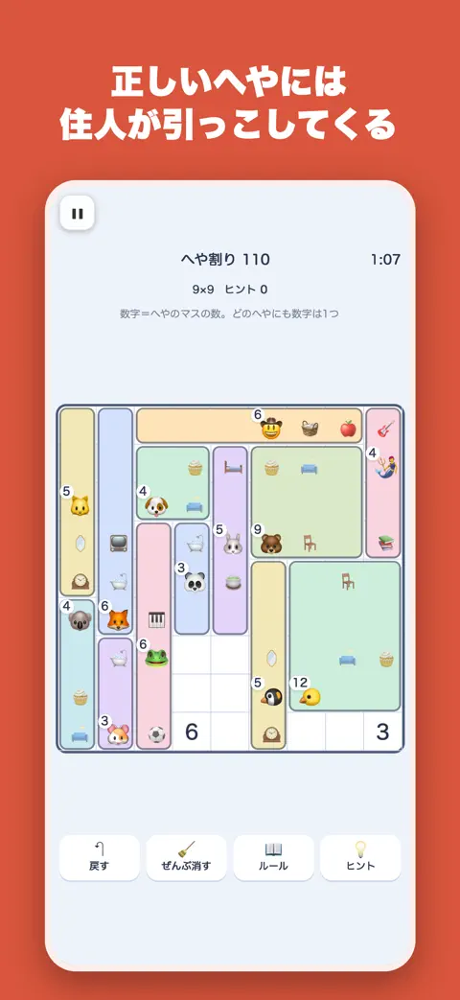
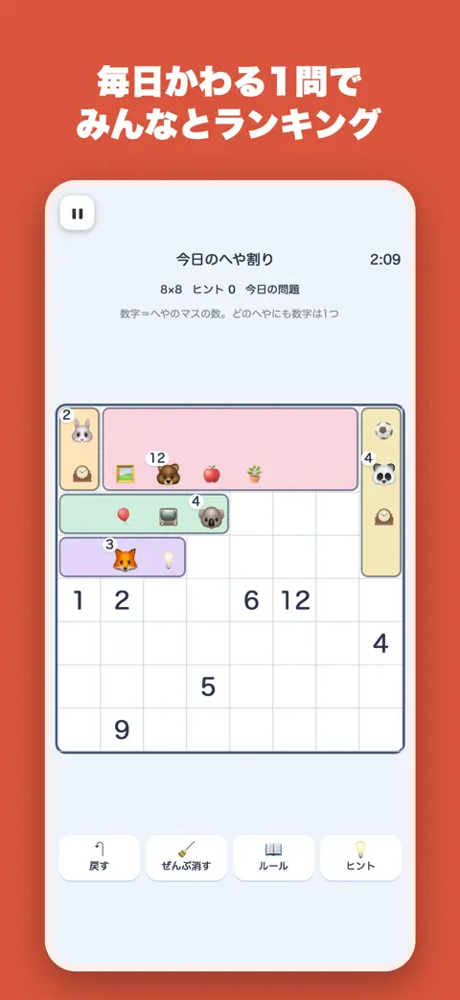
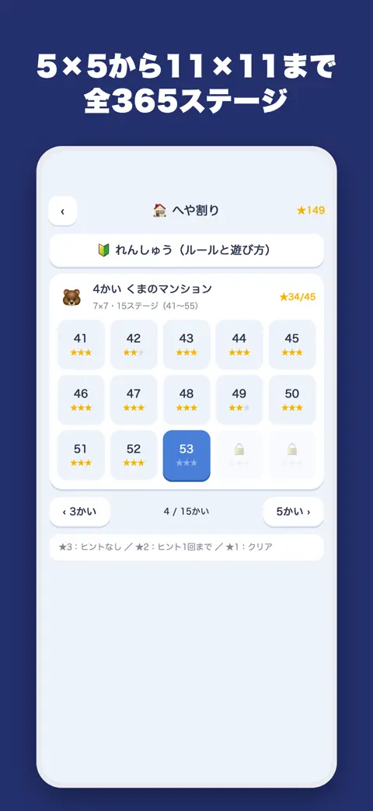

数字の論理パズル（iPhone）
すうじのへや
今日のへや割り、
だれよりも早く解けるか勝負！
数字をヒントにアパートの間取りを考える「へや割り」と、住人を入れる「住人さがし」。毎日かわる今日の問題は、だれでも同じ。タイムでみんなとくらべよう。1問30秒〜2分くらいです。
App Store で無料ダウンロード無料・広告あり／iPhone（iOS 18 以降）
▶ プレイのようす（音なし）
すうじのへやとは？
すうじのへやは、数字をヒントに盤をへやに分ける「へや割り」と、住人を入れる「住人さがし」の数字パズル。毎日の「今日のへや割り」「今日の住人さがし」はみんな同じ問題で、タイムをランキングでくらべられます。全365ステージ。無料（広告あり）のiPhoneアプリ。
- 料金無料・広告あり
- 対応iPhone（iOS 18 以降）
- ジャンルパズル・脳トレ
- 今日の問題毎日0時（日本時間）にかわる





「今日のへや割り」「今日の住人さがし」で、タイム勝負
- みんな同じ問題毎日1問ずつ、だれでも同じ問題。タイムで順位がきまります。
- 1回目が本番ランキングに入るのは、その日の1回目の記録。2回目からは練習で何回でも。
- 名前を決めるだけサインインはいりません。ニックネームを決めるだけで参加でき、記録はいつでも消せます。
ランキングは「今日」の順位と「星の合計」。「過去の問題」で前の日の問題も遊べます（ランキングは今日の問題だけ）。はじめて遊んだ日から7日間は、今日の問題でもヒントが使えます（ランキングでは電球のしるしがつきます）。
こんな人におすすめ
- 数字や論理のパズルが好きな人
- 1問30秒〜2分の、ちょうどいい長さで遊びたい人
- カンにたよらず、考えて解ききるのが好きな人
遊び方は3ステップ
- なぞる数字は、そのへやのマスの数。指でなぞって長方形のへやを作ります。
- 分けきるどのへやにも数字は1つだけ。盤をぜんぶ分けたらクリアです。
- 住人がくる正しいへやには、ねこ・おばけ・ロボットなどの住人が引っこしてきます。
ルール
へや割り：長方形のへやに分ける
盤を、長方形（正方形も OK）のへやに分けます。指でなぞると、へやができます。
へや割り：数字はへやのマスの数
どのへやにも、数字がちょうど1つ。数字は、そのへやのマスの数です。ぜんぶのマスがへやになったらクリア。
住人さがし：へやの数字の人数だけ
色でかこまれたところが1つのへや。へやの数字の人数だけ、住人を入れます（0 のへやには住みません）。
住人さがし：列にちょうど1人
どの たての列・よこの列にも、住人はちょうど1人。住人どうしは、となりあいません（ななめも だめ）。
こまったらヒント
ヒントは理由つき。「この6のへやになれる形は、これだけ！」のように教えてくれます。どの問題も答えは1つです。
特徴
- 245へや割り5×5 から 11×11 まで、15のかい
- 120住人さがしたて・よこの列に、住人はちょうど1人
- 1つどの問題も答えは1つ考えればかならず解けます
- 理由つきヒント「この6のへやになれる形は、これだけ！」
さいきんのアップデート
バージョン 1.0.14（2026年11月23日）
- BGMをつけました（タイトルの「BGM」でオン・オフできます）
- 画面の上に時計と電池を出すようにしました
- 今日の問題の結果から「ステージで遊ぶ」「タイトルへ」にすぐ進めるようにしました
くわしい遊び方
数字をヒントに、アパートの間取りを考えるパズルです。正しいへやができると、住人が引っこしてきます。どの問題も、こたえは1つだけです。
- へや割り：盤を長方形（正方形もOK）のへやに分けます。どのへやにも数字が1つだけあり、数字はそのへやのマスの数です。指でなぞるとへやができ、へやをタップすると消せます。5×5 から 10×10 まで、245ステージ
- 住人さがし：色でかこまれたへやに、へやの数字の人数だけ住人を入れます。どの たての列・よこの列にも住人はちょうど1人、住人どうしはとなりあいません（ななめもだめ）。マスをタップするたびに ×（いない）→ 住人 → 空 とかわります。5×5 から 9×9 まで、120ステージ（2つあわせて365ステージ）
- れんしゅう：はじめてのときは、小さな問題でルールを覚えられます。ステージえらびの「れんしゅう」からいつでもできます
- ★：クリアのタイムで決まります（★3：めやすのタイムまで／★2：その2.5倍まで／★1：クリア。ヒント1回で +30秒）
- 今日のへや：毎日かわる「今日のへや割り」と「今日の住人さがし」が1問ずつ（だれでも同じ問題）。タイムでランキングに参加できます（ランキングに入るのは、その日の1回目だけ。1回目はヒントなし。2回目からはれんしゅうです）
- ヒント：次に決まるへや（住人）を1つ、理由といっしょに教えます。1日3回まで無料で、そのあとは動画広告を見ると1回使えます（見るかどうかは選べます）
よくある質問
へや割りはどんなパズル？
盤を長方形のへやに分ける数字パズルです。どのへやにも数字がちょうど1つあり、数字はそのへやのマスの数です。すうじのへやで遊べます。
住人さがしのルールは？
色でかこまれたへやに、へやの数字の人数だけ住人を入れます。どのたて・よこの列にも住人はちょうど1人で、住人どうしはとなりあいません（ななめもだめ）。
無料ですか？
はい、無料でダウンロードして遊べます（広告あり）。App Store のページからどうぞ。
どの端末で使えますか？
iPhone（iOS 18 以降）で使えます。Android 版はありません。
へやがうまく作れない
へやの角になるマスから、反対の角のマスまで指をすべらせてください。なぞっている間は「3×2＝6マス」のように大きさが出て、正しい形なら緑になります。数字「1」のマスは、タップするだけで1マスのへやになります。
住人さがしで × と住人の順番を変えたい
タイトル画面の ⚙️（せってい）で「1回目のタップで住人」をオンにすると、住人 → × → 空 の順になります。
途中でやめたい
左上の一時停止ボタンでいつでも止められます。とちゅうでアプリを閉じても、次に開くと続きから遊べます。
次のステージが選べない
ステージはクリアすると次が開きます。
記録を消したい・引き継ぎたい
記録はこの iPhone の中に保存しています（ランキングに名前をのせた場合は、ニックネームと記録だけを送ります。ランキングの画面の「ランキングから自分の記録を消す」でいつでも消せます）。アプリを削除すると記録も消えます。ほかの端末への引き継ぎにはまだ対応していません。
お問い合わせ
不具合やご要望は、メールでお知らせください。お使いの iPhone の機種と iOS のバージョンを書いていただけると助かります。